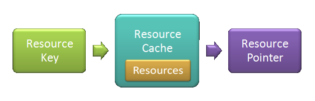

Resource Cache Tutorial
thor::ResourceCache has been replaced by the superior thor::ResourceHolder. Consider reading the Resources Tutorial instead.
Welcome to the tutorial about the Resources module of the Thor Library. Resources are heavyweight objects that can be loaded from the application, such as images, fonts, sound files, etc. In SFML, there exist the following classes with typical resource semantics:
sf::Imagesf::Texturesf::Fontsf::Shadersf::SoundBuffer
Note that sf::Music is a special case; it behaves quite distinctly from the rest. Music is streamed and thus not completely loaded into memory. It has no real data, so shared access makes not much sense.
The Thor Resources module provides an interface that simplifies loading and access to resources. These can be the ones of SFML, Thor also allows you to integrate your own resource types. Basically, the module consists of three widely independent parts:
Resource keys
Keys are IDs to access the resources. They contain loading information for the corresponding resource. A resource key for an sf::Texture which should be loaded from a file “image.jpg” is declared like this:
thor::ResourceKey<sf::Texture> key = thor::Resources::fromFile<sf::Texture>("image.jpg");
The functionfromFile()indirects to the loading function sf::Texture::loadFromFile() and has the same signature.
As mentioned, resource keys represent identifiers for resource access. Keys that are initialized identically refer to the same resource. Analogously, keys being initialized with different parameters (or even different functions) are always distinct, which means they refer to different resources. Note that resource keys do not store the resource itself. The only thing they have is the abstract knowledge about how to load resources and how to differ between them.
Resource caches
The class template thor::ResourceCache is the core of the resource management system. It maps keys to resources and returns pointers to access them. But before, it has to load the resources into memory, what can be done using the resource keys:
thor::ResourceCache<sf::Texture> cache;
cache.acquire(thor::Resources::fromFile<sf::Texture>("image.jpg"));
The acquire() function loads the resource according to the way in which the resource key was initialized. In the upper example, the texture is loaded from a file called “image.jpg”. The next time we acquire the texture using the same key, the ResourceCache recognizes that the corresponding resource has already been allocated and does not load it again. But when we use a different key (initialized with other parameters or another factory function), we address another resource, therefore it is not cached. To make it clear:
thor::ResourceKey<sf::Texture> key = …, key2 = …; thor::ResourceCache<sf::Texture> cache; cache.acquire(key); // Loads a new resource cache.acquire(key2); // Loads a new resource cache.acquire(key); // No loading (resource already stored)
In case a resource cannot be loaded (e.g. wrong filename), the method acquire() throws an exception of type thor::ResourceLoadingException.
Note that thor::ResourceCache does actually not own the resources. It rather acts as a cache with the knowledge about the resources it has already loaded (and how they have been loaded). The resource cache does automatically deallocate resources in its destructor, but only those which aren't referenced from the outside anymore.
If you want a single cache to store resources of different types, the class thor::MultiResourceCache is your friend:
thor::MultiResourceCache mcache; mcache.acquire(thor::Resources::fromFile<sf::Texture>("image.jpg")); mcache.acquire(thor::Resources::fromFile<sf::SoundBuffer>("sound.wav"));
Resource pointers
We have now seen how to load resources, but how can we actually use them? Here comes the third component of the Resources module into play: The std::shared_ptr class template. This smart-pointer offers a safe and elegant way to access the resources as soon as they are loaded. It is returned by the acquire() function.
thor::ResourceKey<sf::Texture> key = …; thor::ResourceCache<sf::Texture> cache; std::shared_ptr<sf::Texture> texture = cache.acquire(key);
In case you are not very familiar with shared_ptr, here is a list of its most important properties:
- Pointer-like behavior through overloaded dereferencing operators
*and->. Dereference the smart pointer to access the resource class. - Shared-ownership semantics. If you copy
shared_ptrinstances, you get multiple smart pointers that point to the same resource. The smart pointers can be passed around or stored in STL containers without the high cost of copying the resource itself. - Strong reference semantics. As long as a
shared_ptrrefers to a resource, the latter cannot be released. This prevents accidental destruction of resources that are in use.
When you want to access already loaded resources without possibly allocating new ones, search() is the function of your choice. It never loads resources. In case nothing is found, a null pointer is returned.
Releasing resources
When you allocate resources, you also have to deallocate them. Fortunately, the smart pointers take over most of the work. To allow reasonable deallocation, the resource class must support RAII, hence its destructor must take care of cleaning its own resources up. But this should be the default in modern C++ anyway. Every SFML resource class does this automatically.
Resources stored in a resource cache are released in the destructor ~ResourceCache() – unless you release them before, or unless you still need them. Without further configurations, resources are kept in memory until you explicitly release them. This behavior is quite meaningful, as it saves time to reallocate resources that are temporarily unused. On the other hand, there are situations which require a preferably low resource allocation. Here, resources are released as soon as they become unused. The Thor library supports both release strategies; they reside as ExplicitRelease and AutoRelease in namespace thor::Resources.
Now you still don’t know how to release resources! Well, that’s simple, just call the release() function:
… // as always
cache.release(key);
If the corresponding resource is not used at the moment of the call, it is immediately released. Otherwise, the ResourceCache will take care of releasing it ASAP – this happens the moment when the last shared_ptr loses ownership of the resource.
Const correctness [advanced]
It is often desirable that resources are not altered after they have been initialized. shared_ptr imitates the const-correct behavior of raw pointers. That is to say, you can add const qualifiers, but not remove them.
std::shared_ptr<sf::Image> ptr; std::shared_ptr<const sf::Image> cptr; ptr = ptr; // ok, same type cptr = cptr; // ok, same type cptr = ptr; // ok, adding const-qualifier ptr = cptr; // error, removing const-qualifier
So when you use pointers to constant resources, you prevent accidental modification through shared_ptr. If you are very radical, you can even declare the template argument of ResourceCache const. Like this, you have no possibility to change resources once they have been loaded.
thor::ResourceCache<const sf::Image> cache; std::shared_ptr<const sf::Image> cptr = cache.acquire(key); // ok std::shared_ptr<sf::Image> ptr = cache.acquire(key); // error
Different management strategies [advanced]
The resource cache allows to tweak some behavior. This affects the following actions, which concern acquire() calls in the future:
- When a resource cannot be acquired, throw exception or return null pointer? This can be configured via
setLoadingFailureStrategy(). - When the last resource pointer loses ownership of a resource, automatically release it or only release on explicit request? Use
setReleaseStrategy()to choose the reaction.
Custom resources [advanced]
Having your own resource class, the following steps are required to make it compatible with Thor:
- Your resource class shall support RAII, but neither copyability nor default-constructibility is required.
- You need to provide resource keys that are able to load the resource.
A short example shows how to integrate an existing class called Mesh to Thor. First, let's see what's given by the external mesh API:
// Custom resource class class Mesh {}; // Factory function returning a pointer to the resource Mesh* createMesh(const char* filename);
On user side, we now implement a functor that is able to load such a mesh. Thor requires this functor to return a std::unique_ptr to the resource, which shall be nullptr in case of loading failure.
// Functor to load mesh struct MeshLoader { MeshLoader(const char* filename) : filename(filename) { } std::unique_ptr<Mesh> operator() () const { return std::unique_ptr<Mesh>(createMesh(filename)); } const char* filename; };
Now we are able to create a Thor resource key from the loading functor and a string ID which is unique for the same resource (here the filename):
thor::ResourceKey<Mesh> meshKey(const char* filename) { return thor::ResourceKey<Mesh>(MeshLoader(filename), filename); }
Afterwards, we can directly use Mesh with Thor:
int main() { thor::ResourceCache<Mesh> cache; std::shared_ptr<Mesh> mesh = cache.acquire(meshKey("mesh.obj")); }
Note that if we use lambda expressions, we don't need the functor, so the code to integrate the Mesh class is very short:
thor::ResourceKey<Mesh> meshKey(const char* filename) { return thor::ResourceKey<Mesh>( [=] () { return std::unique_ptr<Mesh>(createMesh(filename)); }, filename); }